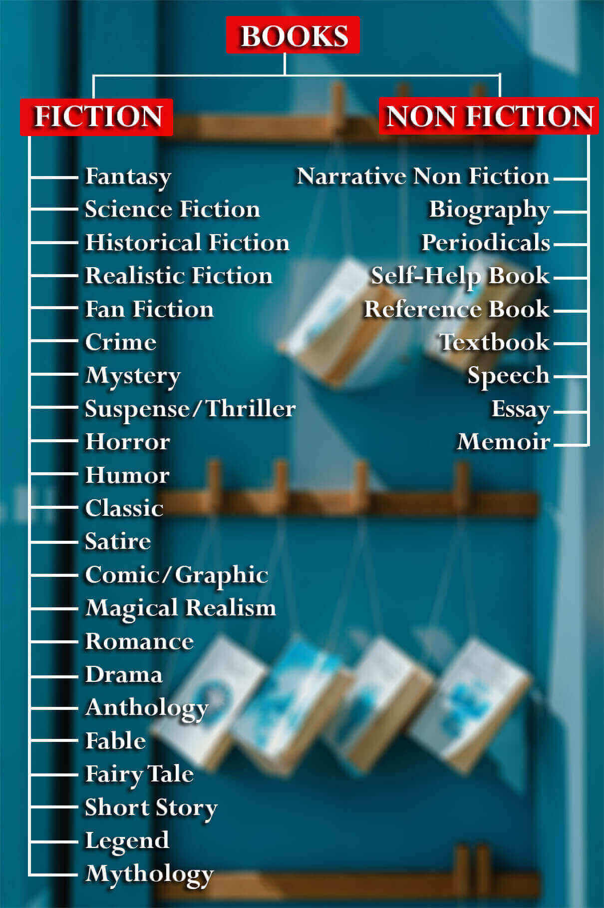

If you are a bibliophile, you already know what genres you prefer but if you are new to reading you might be wondering what type of reader you are or which books gives you that little pleasures and you are wondering which book genre you should go for? What type of books you should read?. Sometimes writers also gets stumped and struggle how to describe their books to the readers or publisher when asked “What genre is your book?” So here we have curated a brief explanation of some genres you might find interesting.
First let’s see what are genres, some say genres are writing format. For example, it can be fiction, non fiction, poetry, play, comics or screenplay. In a nutshell genre is how a piece of writing is structured.
Other definition defines genre as “characterized by a particular style, form, or content.” Genre is a set of expectations of what the story may be about. Narrative elements that help define a genre include: setting, writing style, characters, tropes.
Setting: Where the story is set. Is it in past (Historical), present(current situations) or future.
Characters: Are the characters realistic, means do they exists in our world like people, animals or things, or are they magical, or do any of them are supernatural.
Tropes: Tropes are defined as common ideas, character types, or plot elements that occur in a given genre. For example, if the story has space ships, robots, or time travel, it might be a science fiction.
Writing Style: This is where “genre as format” and “genre as content” overlap.
Types of books
All books can be broadly divided into two categories these are further divided into subcategories which is known as genres. The two main categories are Fiction and Nonfiction.
Fiction
The story in fiction books are not real, they contain a made-up story – a story that did not actually happen in real life. These stories are based on sheer imagination as well as creativity of the authors and are most likely not based on facts.
Harry Potter Series by J. K. Rowling, The song of ice and fire by George RR Martin are some of the examples of fiction books.
Non fiction
They are opposite of fictional books, the stories are based on facts, they are happened in real life, it can be someone’s biography.
An Encyclopaedia, Mein Kampf by Adolf Hitler are some examples under this category.
There is one more term as semi- fiction, these types are included in fictional category only. It is a mixture of fiction and nonfiction. These books contain factual data as well as imagination or creativity.
[Image of categories]
The above image shows all different types of genres in which a book can be classified. A book can be categorised under many different genres. For example – Agatha Christie’s Murder on The Orient Express can come under Mystery, Thriller, Crime and Detective as well as Realistic Fiction.

If you are a bookish or you like reading then you should read books in every genre, atleast one book per genre to get a hang of it. I believe it is important to have read something in most genres because they stimulate different parts of the brain. Fiction is incredibly helpful in learning empathy. Fantasy and science fiction genre requires not only learning new rules but world building and also engages creativity. Romance genre generates emotions that feels good (usually there is a happy ending albiet I find this genre to have the most consistent plot devices and tropes) and humour also which is rather obvious. Cozy mysteries do just that, but they probably aren't the most beneficial option. On to nonfiction, the obvious benefits here are actually increasing academic learning and perspective (perspective can be obtained in fiction, but I think it's more "real" with actual people, which is common sense.). But in nonfiction category we have to be very careful as "nonfiction" is often based on someone else’s perspective so it is not completely true; most of the content is biased and often requires reading multiple perspectives to grasp a good sense of the material. Technical books don't often require that. Explorative topics like "how to fix our education system" or "how to improve yourself" type books that engage your brain to search for your own answer or truth and question the logic.
The best genres for me changes for my current circumstances. For instance, when I was younger, I wanted to do more and be more. I read a lot of fantasy stories. Nowadays, I seek better understanding around me and want the foundation the others around me seem to have, so I read classics (Frankenstein right now, it's much different than movie interpretations!). When I need a break from my life, I often read manga. I like the different types of stories and different cultural experiences one can find there.
Wanna reach out to us?